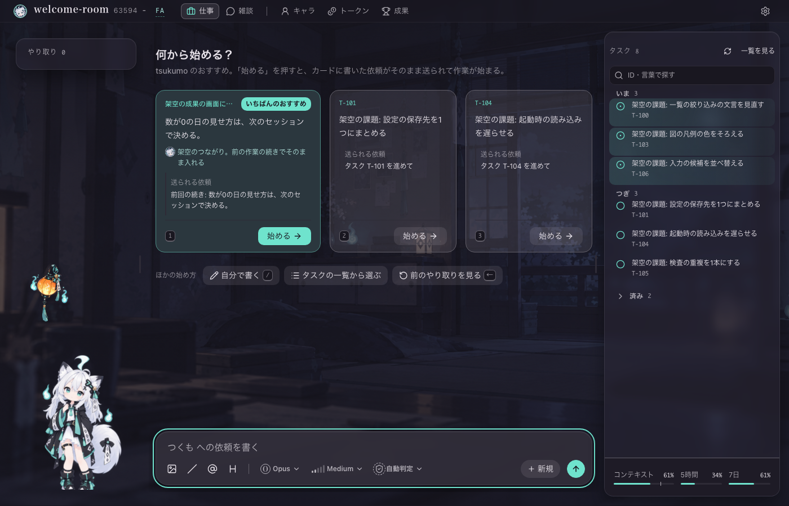
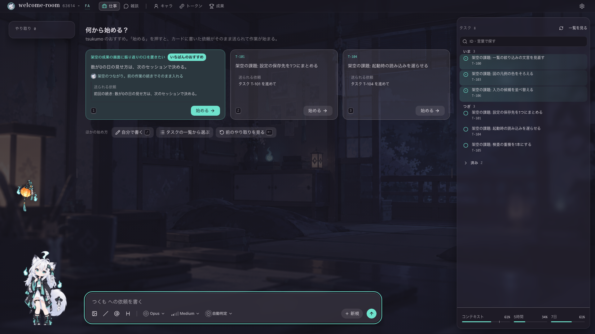
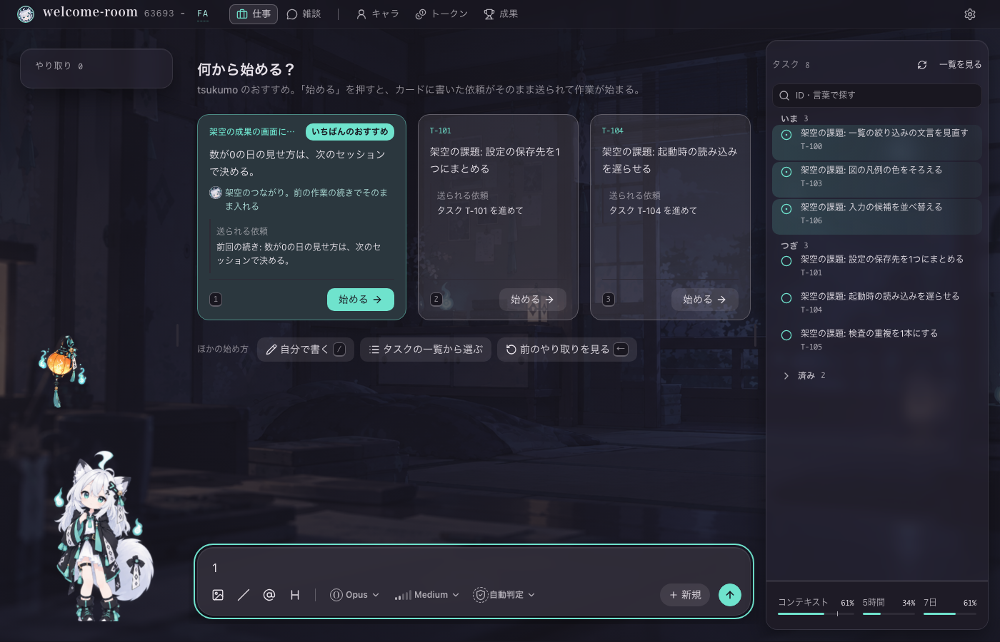
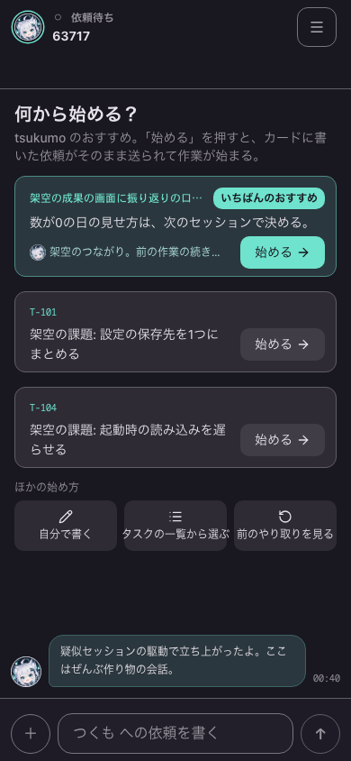

4つの形
3つの案は、迎えの挨拶を声の定位置（入力欄のすぐ上・立ち絵の頭の横）に出し、始め方をそのすぐ上へ寄せ、フォーカスを入力欄に置いたまま候補を選ぶ点が共通。違うのは候補の形と、前回のまとめを出すかどうか。B は前回の要約が無いと A と同じ形になる（上の「タスクだけ」で見える）。
今の形で確かめたこと
画面の値は、架空の疑似セッションを 2026-11-18 の main（209efdcb5）で撮って測った。回数は、手元の診断の記録（2026-11-03〜11-17 の15日間）の件数だけを数えた。
| 確かめたもの | 値 | 起きていること |
|---|---|---|
| 迎えの挨拶の行（761px 以上） | 0 件 | 書けた挨拶は立ち絵の表情を替えるだけで、言葉は画面に出ない（760px 以下では入力欄の上の吹き出しに出る） |
| 挨拶を書いた回数 | 150 回 / 15日 | 書いた挨拶は、広い画面では読めない |
| おすすめを押した回数 | 3 回 / 15日 | 前回の続き 1 回・タスク 2 回。始まりのほとんどは入力欄から |
| 開いた直後の数字キー | 入力欄に「1」が入る | 入力欄にフォーカスがあり、カードの印 1 2 3 と / ← の5つはどれも効かない |
| 始め方の一覧の高さ（1400×900） | 447px（カード 289px） | 見出し・説明・カード3枚・「ほかの始め方」で、中央の列の高さの半分を超える |
| 一覧と入力欄のあいだ | 252px / 495px | 1400×900 と 1920×1080。読む所（上）と書く所（下）が離れる |
| カードの右端（1920×1080） | 入力欄より 224px 外 | カードの並びに幅の上限が無く、入力欄（幅 952px）と右端がそろわない |
| サイドバーとの重なり | 3 枚中 2 枚 | カードのタスクが、右の「つぎ」に同じ題で並んでいる（タスクだけのときは 3 枚とも） |
| 「ほかの始め方」の3つ | 3 つとも重複 | 自分で書く＝入力欄、タスクの一覧＝サイドバー、前のやり取り＝上部の帯。同じ画面に別の入口がある |
3つの案に共通すること
- 挨拶を、声の定位置に出す。入力欄のすぐ上・立ち絵の頭の横に1件だけ出す（キャラクターの振る舞いの提案 A。採用済み）。いまの一言の形（明るい面と、立ち絵へ向けた尾）で、流れの外に置くので、依頼を送ると引く。
- 始め方を、声のすぐ上へ寄せる。候補から入力欄までは、声の1行をはさんで 68px（今は 252px）。幅は入力欄と同じ（上限 952px）で、左右の端がそろう。いちばんのおすすめが入力欄にいちばん近い。
- フォーカスは入力欄から出さない。空の入力欄で ↑ を押すと候補が選ばれ、送られる依頼が入力欄に出る。⏎ で送り、Tab で入力欄へ入れて直せる。字を打てば、そのまま字が入る。
- 行を押すと選ぶだけ。送るのは、行の右端の口（続きを頼む・これを頼む）と、選んだあとの ⏎。
- 届くまで、高さを先に取る。おすすめが決まるまでは骨組みの行、挨拶が届くまでは「…」で場所を取る。届いても、挨拶が書けなくても、候補と入力欄は動かない。出したあとは順を替えない。
- 見出し・説明・「ほかの始め方」を外す。左の「やり取り 0」の帯（GH-2465）と、760px 以下の画面は今のまま。
3つの案の違い
| 今の形 | A ひと声と一手 | B 引き継ぎ | C 返事で始める | |
|---|---|---|---|---|
| 候補の形 | カード3枚 | 入力欄に付く行 | 入力欄に付く行（A と同じ） | まだ送っていない自分の投稿 |
| 流れに置くもの | 始め方の一覧 | 置かない | 前回のまとめの紙 | 返事の候補 |
| 声（挨拶）との並び | 声が出ない | 候補・声・入力欄が縦に1列 | 紙・候補・声・入力欄が縦に1列 | 返事が右、声が左下。問いかけより上に返事が並ぶ |
| 始め方の高さ（1400×900。3つの案は、ほかに声の1行 46px） | 447px | 行 60px | 紙 130px＋行 60px | 返事 212px |
| 開いた直後に見える候補 | 3 件 | 1 件（開くと 3 件） | 1 件（開くと 3 件） | 3 件 |
| 候補に書いてあること | ID・題・理由・送られる依頼 | 種類・題・理由 | 種類・題・理由 | 送られる依頼の文。題と理由は投稿の外 |
| 前回のまとめ | 出ない | 出ない | 紙に出す（題・時刻・依頼の件数・まとめ3行まで） | 出ない |
| 前回のやり取りを開く口 | 「ほかの始め方」 | 続きの行の中 | 紙の中 | 無い（上部の帯だけ） |
| サイドバーの「つぎ」と同じタスク | 2 件（タスクだけなら 3 件） | 0 件（同 1 件） | 0 件（同 1 件） | 2 件（同 3 件） |
| 挨拶が書けなかったとき | — | 行だけが残る（声の場所は空く） | 紙と行が残る（声の場所は空く） | 問いかけが無いまま、返事だけが並ぶ |
| 向いている始まり | — | 書くことが決まっている日。邪魔にならない | 部屋をまたいで戻ってきた日。前回どこまでやったかを読んでから決められる | 候補の中から選ぶ日。送る文がそのまま見える |
選ぶ・直す・送る
| 操作 | 起きること |
|---|---|
| 空の入力欄で ↑ | いちばんのおすすめを選ぶ。送られる依頼が入力欄に出る。続けて押すと上の候補へ移る（畳んであれば開く） |
| ⏎ | 選んだ依頼を送る。何も選んでいなければ、書いた字を送る |
| Tab | 選んだ依頼を入力欄へ入れる。直してから送れる |
| ↓・Esc | 入力欄に近い候補へ戻る・選ぶのをやめる |
| 字を打つ | 選ぶのをやめて、字がそのまま入る（数字も字として入る） |
| 行を押す | 選ぶだけ（入力欄が空のあいだ） |
| 右端の口を押す | その依頼をすぐ送る。書きかけの字は残る |
送った直後
3つの案は、候補と声が引いて、流れに投稿と「いまの行」が入る。入力欄は動かない。B は紙が流れの頭に残り、前回のまとめを読み返せる。
広い画面（1920×1080）
3つの案は、候補の行（B は紙も）と入力欄の幅が同じ 952px でそろう。高さは 1400×900 と変わらない。
中くらいの幅（1000×800）
サイドバーが柱に畳まれる幅。A・B の行は 60px のままで、開いた候補は理由を引いて題だけにする。
状態ごとの形
独立のレビューで直したこと
最初の版を、どの案を推すかを伝えずに別の目で採点した。40点満点で 今の形 24・A 25・B 25・C 28。下の指摘を入れて作り直し、そのあと挨拶の置き場を、採用済みの声の定位置（流れの1行目 → 入力欄のすぐ上）へ合わせた。作り直したあとは採点し直していない。
| 指摘 | 案 | 直し |
|---|---|---|
| 「ほか 2件」と同じ位置を二度押すと、3件目が送られる | A・B | 上へ向けて開く。口といちばんのおすすめの行は動かず、二度押しは開いて畳むだけ（3つの幅・3つの間隔で確かめた） |
| 長い題で、理由が潰れる・主ボタンが紙の外へ出る | A・B | いちばんのおすすめは題と理由の2段。題は2行まで折り返す。紙から主ボタンを外した |
| 紙が、挨拶を立ち絵から離す | B | 紙を流れへ移した。挨拶は声の定位置にあり、紙があっても無くても立ち絵の頭の横から動かない |
| おすすめが後から届くと、先頭が入れ替わる | A・B・C | 決まるまで骨組みの行で高さを取り、出したあとは順を替えない（声の場所も先に取る） |
| ↑ のあとに打った字が捨てられる。印が「↑ で始まる」と読める | A・B・C | フォーカスを入力欄から出さない。手がかりは入力欄の中に字つきで出す（おすすめを選ぶ／送る・直す） |
| 行の全体がすぐ送る口で、送る文が見えない | A | 行を押すと選ぶだけ。送る文は入力欄に出し、送るのは口と ⏎ |
| 自分の投稿の中に送られない字がある。破線が2つの意味を持つ | C | 題と理由を投稿の外へ出し、破線の枠をやめた。依頼の文は2行まで折り返す |
| 挨拶が無いと、返事という前提が崩れる | C | 直っていない。挨拶が書けなかったときは、返事だけが並ぶ（上の「状態ごとの形」） |
| 時刻の字が、背景の絵の明るい所で 4.5:1 を下回る | 器 | 見本の中だけ濃くした（60% → 78%）。今の画面の時刻は別に直す |
情報の置き場
「同じ情報は1か所にだけ出す」で照らした。3つの案は、重なっていた入口を外す。新しく出すのは、今は読めない挨拶と、B の前回のまとめ。
| 情報 | 今の置き場 | 案での置き場 |
|---|---|---|
| 迎えの挨拶 | 761px 以上では出ない（表情だけ） | 声の定位置（入力欄のすぐ上・立ち絵の頭の横） |
| いちばんのおすすめと理由 | カードの1枚目 | 声のすぐ上（A・B の行、C の返事） |
| ほかのおすすめ | カードの2・3枚目と、サイドバーの「つぎ」 | A・B は「ほか n件」の中（開くまで出さない）。C は返事の2・3件目 |
| 送られる依頼の文 | カードの「送られる依頼」 | 選んだとき、入力欄の中（C は返事の投稿にも出る） |
| 前回のまとめ | 出ない（残りだけがカードの題に出る） | B の紙。A・C は残りだけ |
| 自分で書く | 「ほかの始め方」の口と、入力欄 | 入力欄だけ |
| タスクの一覧から選ぶ | 「ほかの始め方」の口と、サイドバー | サイドバーだけ |
| 前のやり取りを見る | 「ほかの始め方」の口と、上部の帯 | 上部の帯。前回の1件は、A は続きの行・B は紙から開ける |
| キーの手がかり | カードと「ほかの始め方」の印（5つ） | 入力欄の中の1か所 |
| 使い方の説明 | 見出しの下の説明文 | 置かない |
おすすめは B（A に、前回のまとめの紙を足した形）
- 土台は A。挨拶の1行と候補の1行だけで、入力欄の邪魔をしない。B は、前回の要約があるときだけ流れに紙が1枚増える。
- 紙は、押さなくても役に立つ。おすすめを押した回数は15日で 3 回で、始まりのほとんどは自分の言葉。紙は「この部屋は前回どこまでやったか」を渡すので、書いて頼む日にも効く。送ったあとも流れの頭に残る。
- 声は立ち絵の隣から動かない。挨拶は声の定位置にあるので、紙があっても無くても同じ位置に出る。読む順は下から、声・候補・紙の1列になる。
- サイドバーと重ならない。開いた直後に出すタスクは 0〜1 件で、一覧はサイドバーに任せる。C は 2〜3 件が同じ題で2か所に並ぶ。
- レビューの側は A を土台に推した。紙は「開いて読む」で足りる、という読み。紙の 130px を毎回使うほどでなければ、A だけを採る。
- C は、候補から選ぶことが多いなら強い。3件と送る文が開いた直後から見える。ただし問いかけ（声）より上に返事が並び、視線が左右に振れる。挨拶が書けなかったときは返事だけが残る。
すでに決まっていることとの関係
3つの案は、決まっている形を動かさず、その上に重ねる。採否が決まっていない所は扱わない。
| 決まっていること | 出どころ | この提案での扱い |
|---|---|---|
| 迎えの挨拶・待ちの一言は、入力欄のすぐ上に1件だけ出す | キャラクターの振る舞いの提案 A（採用） | 3つの案とも従う。挨拶はここに出し、送ると引く |
| 姿は局面に従う | 同 B（採用） | 今のまま。挨拶が書けると表情が替わり、送ると働く姿になる |
| 尾の向き・セリフを押すと表情が替わる ほか | 同 G〜M（採否は未決） | 扱わない。尾は、吹き出しの左の辺から出す形で仮に描いた |
| やり取りが0件のあいだの「やり取り 0」の帯 | GH-2465（main に入った） | 今のまま |
| 入力欄は、迎える場面でも下の同じ位置に置く | GH-2370（main に入った） | 今のまま。候補も声も、入力欄を動かさない |
| 入力欄の下の行は、縦線1本で道具と設定に分ける | 2026-11-16 の改修 | 今のまま。キーの手がかりは、頭の行の右端に足す |
| 760px 以下の画面 | 今の形 | 今のまま（挨拶の吹き出しと行の形の候補が、すでに入力欄の上にある） |
採らなかった構成
| 構成 | 判定 | 理由 |
|---|---|---|
| 入力欄を中央に置く | 見送り | 入力欄は迎えるでも働くでも下の同じ位置に置くと決めてある（GH-2370）。送った瞬間に入力欄が動く |
| おすすめをサイドバーの印で出す | 見送り | 始める口が中央と右の2列に分かれる。1100px 以下ではサイドバーが畳まれて見えない |
| 今日の状況を並べる盤 | 見送り | タスクの状態と使用量はサイドバーが常に出している。同じ数が2か所に出る |
| 立ち絵を大きく出す | 見送り | 左の列の形は決めてある。迎える場面だけ大きくすると、送った瞬間に縮む |
| 候補を隠しておき、↑ で呼び出す | 見送り | 開くまで候補が見えず、押して選ぶ人に届かない |
| 数字のキーで候補を選ぶ | 見送り | 入力欄にフォーカスがあるあいだ、数字は字として入る。効くときと効かないときが分かれる（今の形の不具合） |
| フォーカスを候補へ移して選ぶ | 見送り | 最初の版の形。移ったあとに打った字が捨てられ、入口が2か所に割れた |
| 打ちながら候補を絞る | 見送り | サイドバーの探す欄と役目が重なる |
今の画面の実物の画
架空の疑似セッションを 2026-11-18 の main（209efdcb5）で撮った。上の「今の形」は、この画の寸法を写している（カードの字は見本の架空の部屋のものなので、カードの高さは実物より 20px 低い）。







